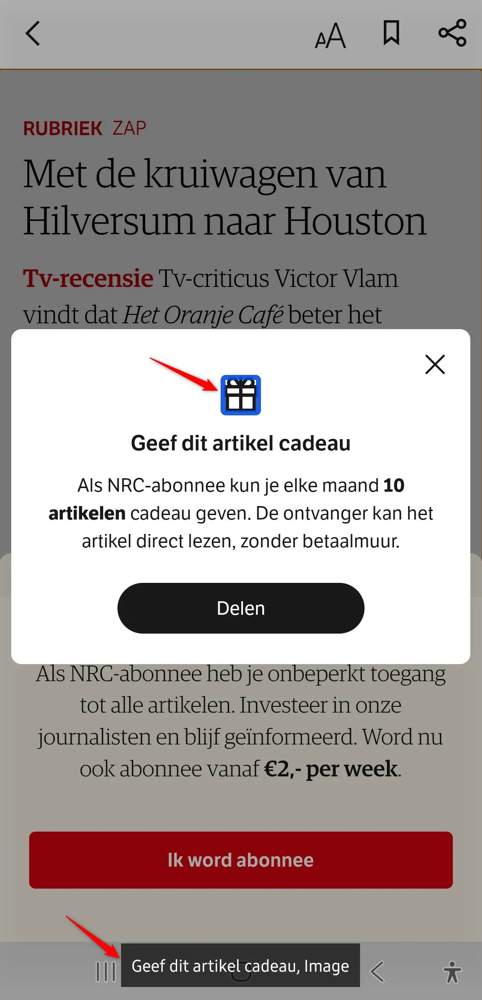
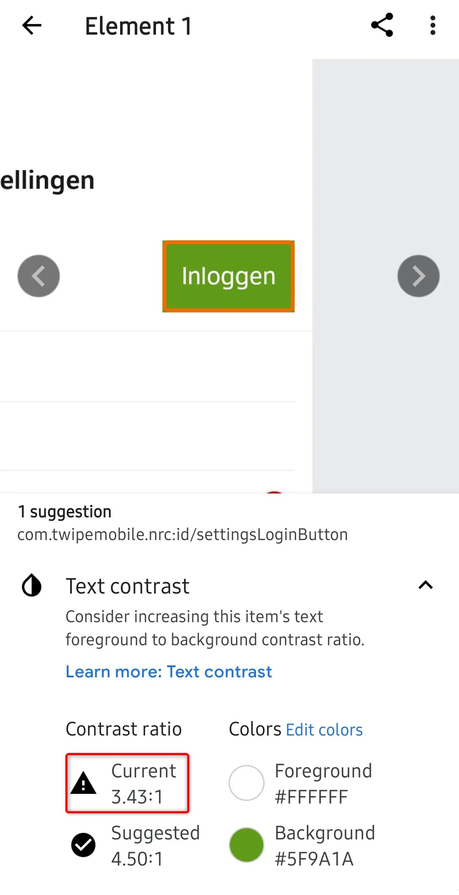
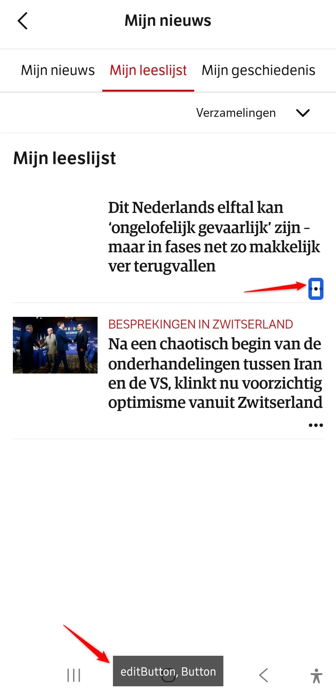
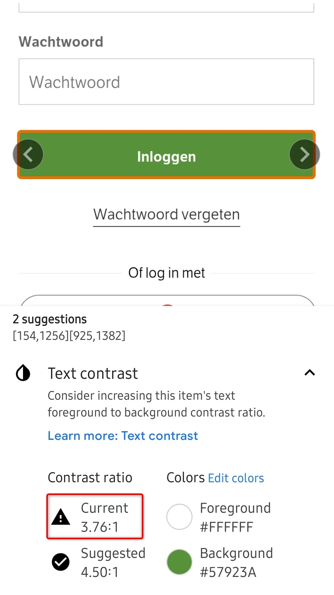

Audit digitale toegankelijkheid van de NRC Android-app
Samenvatting
Wij hebben de NRC Android-app onderzocht in juni 2026. Op dit moment is een deel van de succescriteria als voldoende beoordeeld. In dit rapport lees je welke punten nog verbetering behoeven en hoe deze kunnen worden aangepakt.
Alle schermen van de NRC Android-app (versie 5.12.18) uit de steekproef
Buiten scope:
Web views (inhoud die binnen de app via een browser-component wordt getoond)
Ontoegankelijkheden die ontstaan door de manier waarop het device de app rendert, bijvoorbeeld kleurcontrast in alerts of de weergave van sommige knoppen
Inhoud afkomstig van derden
Basisniveau toegankelijkheidsondersteuning
Samsung Galaxy S25 (Android-versie 16)
TalkBack schermlezer
Extern toetsenbord
Technologieën van de app
Android (native)
TalkBack
Hoe nu verder
Presentatie
Bekijk een korte presentatie (~15 min) met de belangrijkste bevindingen, cijfers en vervolgstappen — handig voor een teammeeting.
Exporteer alle bevindingen als CSV-bestand. Je kunt het in een (online) spreadsheet inladen om met je team samen te werken.
Importeer in Jira
Exporteer alle bevindingen als Jira-compatibel CSV-bestand. Je kunt het direct importeren via Jira > Issues > Import issues from CSV.
Zelf bijhouden in de browser
Houd per bevinding bij of het is opgelost. Je voortgang wordt opgeslagen in jouw browser. Niemand anders kan je resultaat zien.
0 van
0 opgelost
TalkBack aanzetten en gebruiken (Android)
Om de bevindingen in dit rapport zelf te ervaren, test je de app met TalkBack — de schermlezer die standaard op iedere Android-telefoon en -tablet zit. Blinde en slechtziende gebruikers bedienen hun toestel hiermee. Hieronder vind je de stappen om TalkBack aan te zetten en de gebaren die je nodig hebt.
Let op: twee gebarensets. TalkBack kent twee varianten van sommige gebaren. De multi-finger-gebaren (met twee, drie of vier vingers) werken alleen op Android 11 of nieuwer én op Pixel 3 en nieuwer, Samsung Galaxy en een aantal andere toestellen. Op oudere of niet-ondersteunde toestellen gebruik je de L-vorm-alternatieven met één vinger. We noemen hieronder waar het verschil uitmaakt. Wil je weten welke set jouw toestel ondersteunt? Zet TalkBack aan en doe een three-finger tap — TalkBack vertelt je of multi-finger-gebaren actief zijn.
Tip. Oefen eerst een paar minuten in de Practice gestures-modus (op toestellen met multi-finger-ondersteuning: four-finger tap; anders via het TalkBack-menu → Help & feedback). Je kunt daar elk gebaar uitproberen zonder dat de app reageert. TalkBack vertelt je telkens welk gebaar je zojuist hebt gemaakt.
TalkBack aan- en uitzetten
De snelste manier is de volumeknop-sneltoets. Ga naar Instellingen → Toegankelijkheid → TalkBack → TalkBack-sneltoets en schakel deze in. Vanaf dat moment zet je TalkBack aan of uit door de volume-omhoog- en volume-omlaag-toets een paar seconden tegelijk ingedrukt te houden.
Alternatieven:
Instellingen → Toegankelijkheid → TalkBack → schakelaar aan of uit.
Vraag Google Assistant: "Hey Google, zet TalkBack aan" of "… uit".
De belangrijkste gebaren
Zodra TalkBack aan staat, werkt je toestel anders dan je gewend bent. Eén keer tikken selecteert alleen een element — je moet double-tappen om iets te activeren. Dit zijn de gebaren die je nodig hebt om door een scherm te bewegen:
Gebaar
Wat het doet
Veeg met één vinger naar rechts
Spring naar het volgende element.
Veeg met één vinger naar links
Spring naar het vorige element.
Sleep één vinger over het scherm
Explore by touch — TalkBack leest elk element voor dat je vinger raakt. Handig als je niet weet waar iets op het scherm staat.
Double-tap met één vinger
Activeer het element dat TalkBack heeft geselecteerd (link openen, knop indrukken, vinkje zetten). Je hoeft niet precies op het element te tikken.
Double-tap en vasthouden met één vinger
Lang indrukken (voor context-menu's en dergelijke).
Tik met twee vingers
Pauzeer of hervat de spraak. Handig als je iets wilt opschrijven.
Veeg met twee vingers omhoog, omlaag, links of rechts
Scroll door het scherm.
Het TalkBack-menu openen
Het TalkBack-menu is een ingebouwd menu met commando's als Lees vanaf boven, Zoek op scherm, navigatie-instellingen en hulp. Je opent het op twee manieren:
L-vorm (werkt altijd): veeg in één vloeiende beweging omlaag en dan naar rechts, of omhoog en dan naar rechts.
In dat menu vind je onder andere Read from top (lees het hele scherm vanaf het begin voor — essentieel om de leesvolgorde te controleren) en Read from next item (lees door vanaf het huidige element).
Reading controls: springen per type element
De reading controls zijn het equivalent van de VoiceOver Rotor op iOS. Je kiest eerst op welk type element je wilt springen — bijvoorbeeld alleen de koppen, alleen de links, of alleen de formuliervelden — en beweegt vervolgens van element naar element.
Wissel tussen reading controls: veeg in één L-vorm omhoog en dan omlaag, of omlaag en dan omhoog. Op multi-finger-toestellen: three-finger swipe omhoog of omlaag. Herhaal het gebaar om door de beschikbare reading controls te bladeren. TalkBack vertelt welke instelling actief is ("Koppen", "Links", "Bedieningselementen", …).
Volgend element van dat type: veeg met één vinger omlaag.
Vorig element van dat type: veeg met één vinger omhoog.
Welke reading controls beschikbaar zijn, stel je in via TalkBack-instellingen → Menu's aanpassen → Reading controls aanpassen. Sommige opties staan standaard uit.
Systeemnavigatie met TalkBack
Als TalkBack aan staat, werken ook een aantal toestel-acties met gebaren:
Terug: veeg omlaag en dan naar links.
Beginscherm: veeg omhoog en dan naar links.
Recente apps: veeg naar links en dan omhoog.
Meldingen openen: veeg naar rechts en dan omlaag, of met twee vingers omlaag vanaf de bovenkant.
Bevindingen reproduceren
In dit rapport staat bij elke bevinding een "Hoe te reproduceren"-sectie. Daar leggen we uit welke stappen en welke gebaren je moet gebruiken om het probleem zelf te zien. Gebruik deze instructie als naslag: als een stap verwijst naar "de volgende kop", dan weet je dat je de reading controls op Koppen moet zetten en met één vinger omlaag veegt.
Kom je er niet uit? Stuur ons gerust een mail op contact@properaccess.nl — we denken graag mee.
De indeling van sommige schermen werkt alleen in één weergaverichting (staand). Websites en apps moeten bruikbaar zijn in zowel staande als liggende stand. Bezoekers moeten zelf kunnen kiezen welke richting voor hen het prettigst is.
User story
Mijn apparaat staat vast in één richting, bijvoorbeeld omdat de tablet aan mijn rolstoel is bevestigd, omdat ik mijn telefoon met één hand vasthoud, of vanwege een vaste werkopstelling. Ik heb nodig dat elk scherm in de app zowel staand als liggend goed wordt weergegeven. Nu werkt de indeling alleen in de richting die ik niet kan gebruiken, en ben ik buitengesloten totdat iemand het apparaat voor me draait.
Oplossing
Zorg dat de inhoud van de app meedraait en zich aanpast aan de gekozen weergaverichting (staand of liggend).
Door de hele app is de focus-indicator van verschillende elementen alleen te onderscheiden aan een subtiele kleurverandering of aan een rand met laag contrast. Het contrast tussen de gefocuste en de niet-gefocuste staat, of tussen de focusrand en de achtergrond, is lager dan 3:1. Daardoor kunnen mensen met een verminderde kleurwaarneming niet zien waar de focus staat.
Een paar voorbeelden, al is dit geen uitputtende lijst:
"Home"-scherm: roze focus op de tabs in de header
"Home"-scherm: grijze focus op de meeste elementen, zoals nieuwsartikelen en knoppen als "WK Voetbal 2026"
"Home"-scherm: nauwelijks zichtbare lichtroze focus op de opties in het menu onderaan
"Puzzels"-scherm: lichte kleurverandering van de tekst op de knop "Speel"
"Sudoku"-scherm: gele rand rond verschillende elementen, zoals "Archief" en de "x"-knop
User story
Ik heb een visuele beperking. Wanneer ik door de app navigeer, kan ik niet zien welk element nu geselecteerd is. Ik verwacht dat de focus-indicator duidelijk afsteekt tegen de achtergrond.
Oplossing
Geef de focus-indicator minimaal 3:1 contrast ten opzichte van zowel het gefocuste element als de omringende achtergrond. Vertrouw niet alleen op een subtiele kleurverschuiving: combineer kleur met een tweede signaal, zoals een zichtbare rand, een onderstreping, een dikkere rand of een gevulde achtergrond. Controleer dat elke focus-staat (default, geselecteerd, disabled) aan de verhouding voldoet, in zowel light- als dark mode.
Op verschillende schermen verschijnt er geen zichtbare focus-indicator wanneer een element focus krijgt, bijvoorbeeld via een extern toetsenbord of via Switch Access (Android). Mensen die zonder aanraking navigeren, kunnen dan niet zien welk element op dat moment focus heeft.
Een paar voorbeelden:
de knop "Instellingen" in de header
"Zoeken"-scherm: de knop "Toon meer" onder de zoekresultaten
de "Play"-knoppen op alle podcasts
"Sudoku"-scherm: het hele sudoku-element en andere interactieve elementen door de hele app
User story
Ik gebruik de app met een toetsenbord. Wanneer ik door de verschillende schermen navigeer, kan ik niet zien welk element actief is. Ik verwacht dat het actieve element altijd duidelijk zichtbaar is.
Oplossing
Zorg dat elk focusbaar element een duidelijk zichtbare focus-indicator toont. Gebruik de standaard focus-highlight, of pas een custom stateListAnimator of foreground-drawable toe die reageert op de gefocuste staat. De indicator moet minimaal 3:1 contrast hebben ten opzichte van zowel het element als de achtergrond eromheen.
#4 - Knop "Instellingen" heeft een onduidelijke naam
Nadat de gebruiker is ingelogd, verandert de instellingenknop in een knop met alleen een initiaal, bijvoorbeeld "J". TalkBack kondigt die aan als "Hoofdletter J", wat het doel van de knop niet beschrijft. Vóór het inloggen had dezelfde knop nog een duidelijke naam, zoals "Instellingen".
User story
Ik gebruik een schermlezer. Ik wil dat de instellingenknop een duidelijke toegankelijke naam heeft, zodat ik begrijp wat de knop doet voordat ik hem activeer.
Oplossing
Geef de knop na het inloggen een betekenisvolle toegankelijke naam. De zichtbare initiaal mag op het scherm blijven staan, maar de toegankelijke naam moet de actie of bestemming beschrijven, bijvoorbeeld "Profiel", "Account" of "Instellingen".
Op sommige schermen is een deel van de tekst niet volledig zichtbaar wanneer de systeemtekstgrootte fors wordt vergroot. Tekst moet volledig leesbaar blijven, zonder afgekapt of afgesneden te worden, wanneer iemand de tekst vergroot tot 200%.
Zie de volgende voorbeelden:
"Home"-scherm, in de sectie "Nieuwste afleveringen NRC-podcasts": teksten als "Onbehaarde Apen" en "min". Dezelfde kwestie speelt op alle schermen met podcasts
"Zoeken"-scherm: de placeholdertekst en teksten als "Een extra account voor een…" en "Bewaar artikelen om later te…"
"Onderwerpen"-scherm: lange namen van auteurs of onderwerpen
"Mijn nieuws"-scherm: de tekst "Geen nieuwe artikelen", en op andere schermen
User story
Ik gebruik mijn telefoon met een grote tekstgrootte. Als ik die optie aanzet, wordt een deel van de tekst afgekapt en kan ik die niet lezen. Ik verwacht dat alle tekst zichtbaar en leesbaar blijft bij 200% vergroting.
Oplossing
Zorg dat tekstcontainers meegroeien, terugvloeien of scrollen om grotere tekstgroottes op te vangen. Vermijd vaste hoogtes en breedtes op views die tekst bevatten, vermijd maxLines zonder scroll-alternatief, en gebruik sp-eenheden bij android:textSize zodat tekst de systeeminstelling respecteert. Test elk scherm met de grootste tekstgrootte van de telefoon, in zowel staande als liggende stand, om te bevestigen dat geen tekst wordt afgekapt, afgesneden of achter andere elementen verdwijnt.
Wanneer de app voor het eerst wordt geopend, verschijnt het scherm "Onze journalistiek is ons product, niet onze lezers". Dit hele scherm krijgt focus en wordt als één groot blok voorgelezen, zonder betekenisvolle structuur. Visueel bevat het koppen en lijsten, maar die zitten niet in de code en worden niet aan schermlezergebruikers doorgegeven. Daardoor zijn de inhoud begrijpen en het scherm doorlopen erg lastig.
Hetzelfde probleem speelt op andere schermen:
het scherm dat verschijnt na een tik op "Zelf instellen"
"Podcasts"-scherm, onder "Podcasts van adverteerders"
"Podcast: Van Mozart tot Bob Dylan", de sectie onder "Over deze aflevering", en op andere schermen
User story
Ik gebruik een schermlezer. Ik heb nodig dat de inhoud op het scherm in betekenisvolle elementen is opgedeeld, zodat ik er onderdeel voor onderdeel doorheen kan navigeren in plaats van het hele scherm in één keer te horen.
Oplossing
Verwijder de kunstmatige focusbare wrapper die ervoor zorgt dat het hele scherm focus krijgt. Bied de inhoud aan als losse, gestructureerde elementen zoals koppen, teksten, knoppen en lijsten.
#7 - Links zijn niet bereikbaar voor TalkBack-gebruikers
Op het scherm "Onze journalistiek is ons product, niet onze lezers" staan in de tekst de links "privacy", "Cookieverklaring" en "onze partners". Deze links worden niet aan de toegankelijkheidsservice doorgegeven. Daardoor kunnen TalkBack-gebruikers er niet zelfstandig naartoe navigeren, ze geen focus geven en ze niet activeren. Dezelfde kwestie speelt bij de link "cookieverklaring" op het scherm dat verschijnt na een tik op "Zelf instellen".
User story
Ik gebruik een schermlezer. Ik wil dat links binnen tekst toegankelijkheidsfocus krijgen, zodat ik ze zelfstandig kan vinden en activeren.
Oplossing
Zorg dat links binnen tekst als losse toegankelijke elementen worden aangeboden en focus kunnen krijgen. Ze moeten door TalkBack als link worden aangekondigd en met de standaardgebaren bedienbaar zijn.
#8 - Icoon voor externe link heeft geen tekstalternatief
Op het scherm "Onze journalistiek is ons product, niet onze lezers" staan bij de links "privacy" en "Cookieverklaring" iconen die aangeven dat de bestemming buiten de app ligt. Deze informatie wordt niet doorgegeven aan TalkBack-gebruikers, die daardoor niet weten dat de link de browser opent. Dezelfde kwestie speelt bij de link "cookieverklaring" op het scherm na een tik op "Zelf instellen".
User story
Ik gebruik een schermlezer. Ik wil weten wanneer een link inhoud buiten de app opent, zodat ik weet wat ik kan verwachten voordat ik hem activeer.
Oplossing
Zorg dat de informatie van het externe-link-icoon wordt doorgegeven aan hulpsoftware. Maak het icoon niet als apart focusbaar element zichtbaar, want het geeft alleen visuele informatie. Neem de informatie op in de toegankelijke naam of beschrijving van de link, bijvoorbeeld "privacy, opent in browser".
Op het scherm "Onze journalistiek is ons product, niet onze lezers" opent na een tik op "Zelf instellen" en bijvoorbeeld de accordeon "Analytisch" een nieuw scherm. De tekst "Analytisch" bovenaan is niet als kop opgemaakt. Zonder die opmaak verliest een kop zijn betekenis en is hij niet bereikbaar voor mensen die hulpsoftware zoals een schermlezer gebruiken. Koppen zijn juist cruciaal om door inhoud te navigeren en de structuur te begrijpen.
Dezelfde kwestie speelt op andere schermen:
"Home"-scherm en andere schermen: de knop "Instellingen" in de hoek bovenaan
de kop "Digitale krant" op het "Krant"-scherm
de kop "Krantenarchief" op het "Krantenarchief"-scherm
de kop "Advertentie" op het "Puzzels"-scherm
de koppen "Direct naar" en "Services" op het "Zoeken"-scherm, en op andere schermen
User story
Ik gebruik een schermlezer en navigeer met de leesinstellingen op koppen, zodat ik niet door elk element hoef te swipen. Als koppen niet goed zijn gedefinieerd, moet ik het scherm onderdeel voor onderdeel doorlopen en is informatie lastig efficiënt te vinden.
Oplossing
Geef deze teksten de juiste kop-semantiek, zodat hun rol en hiërarchie in de inhoud kloppen.
#10 - Focus is niet logisch en slaat resterende lijstitems over
Na "Zelf instellen - Beheer onze partners" verschijnt onder "Alle partners (20)" een lijst met items. Bij navigatie met TalkBack bereikt de focus het laatste zichtbare item, maar gaat niet verder naar de overige items. In plaats van de lijst te scrollen en naar het volgende item te gaan, springt de focus naar de voettekst ("Je kan je voorkeuren … van je app"). Daardoor missen gebruikers een deel van de lijst.
User story
Ik gebruik een schermlezer. Ik wil dat de focus in de juiste volgorde door alle items in een lijst beweegt, zodat ik bij alle inhoud kan komen zonder iets te missen.
Oplossing
Zorg dat alle items in de lijst in de focusvolgorde zitten. Wanneer de focus het laatste zichtbare item bereikt, moet de lijst automatisch scrollen en de focus naar het volgende item gaan, totdat de hele lijst is doorlopen. De focus mag niet naar inhoud buiten de lijst gaan voordat alle lijstitems zijn bereikt.
Op dit scherm staat onder het "NRC"-logo een afbeelding waarvan het tekstalternatief de tekst eronder herhaalt: "Wil je weten wat er echt speelt? Ontdek onze betrouwbare journalistiek". Omdat de afbeelding geen extra informatie geeft boven op wat er al staat, kun je haar als decoratief beschouwen.
Een vergelijkbare kwestie speelt op andere schermen:
in een venster op nieuwsartikelen heeft een decoratief "cadeau"-icoon het tekstalternatief "Geef dit artikel cadeau", dat exact de tekst eronder herhaalt
in elk nieuwsartikel bij de naam van de auteur, bijvoorbeeld "Vera van Winkelen" in het artikel "De Grote Hittegids: met deze tips kom je warme dagen door"

User story
Ik gebruik een schermlezer en swipe door elk element op het scherm. Ik heb nodig dat decoratieve afbeeldingen, opvulelementen en overbodige iconen verborgen zijn, zodat ik geen tijd verlies aan het langslopen ervan.
Oplossing
Verberg alles wat decoratief of overbodig is voor de toegankelijkheidsstructuur, zodat het niet wordt aangekondigd. Verberg bij een afbeelding naast een tekstlabel de afbeelding en laat het label de toegankelijke naam dragen, of markeer de hele rij als één element met één gecombineerd label. Vuistregel: als een element geen informatie toevoegt die een ziende gebruiker zou missen, mag het niet worden aangekondigd.
De kwestie met de ontbrekende kop is in een eerdere sectie beschreven.
#12 - Contrast van tekst op knop is minder dan 4,5:1
Impact: GrootType: TechniekWCAG: 1.4.3EN: 9.1.4.3

Op dit scherm heeft de knop "Inloggen" onvoldoende kleurcontrast. De witte tekst op de groene achtergrond (#5F9A1A) heeft een contrastverhouding van 3,4:1, onder het vereiste minimum van 4,5:1 voor normale tekst.
User story
Ik heb een visuele beperking, of ik gebruik mijn telefoon in fel zonlicht. Wanneer ik naar een knop kijk, is de tekst lastig te lezen omdat hij niet afsteekt tegen de achtergrond. Ik verwacht dat knoptekst altijd duidelijk zichtbaar is.
Oplossing
Zorg dat de knoptekst een contrastverhouding van minimaal 4,5:1 heeft ten opzichte van de achtergrondkleur.
Op dit scherm ziet de tekst onder "Kernenergie" ("Twee kerncentrales komen óf in de Groningse Eemshaven óf in het Zeeuwse Terneuzen. 'Doe ons dit niet aan', klinkt al") er visueel uit als een kop, maar wordt niet als kop aan hulpsoftware doorgegeven. Schermlezergebruikers leunen op kop-semantiek om de structuur te begrijpen en tussen secties te springen. Vergelijkbare kwesties spelen bij andere nieuwsartikelen op dit scherm en bij soortgelijke elementen op veel andere schermen.
User story
Ik lees de app met een schermlezer. Wanneer ik tussen koppen door spring, zijn sommige visuele koppen onzichtbaar voor mijn schermlezer. Ik verwacht dat alle visuele koppen ook door mijn schermlezer als echte koppen worden herkend.
Oplossing
Markeer het element als kop, zodat hulpsoftware het correct doorgeeft. Stel op Android android:accessibilityHeading="true" in (API 28+) of roep ViewCompat.setAccessibilityHeading(view, true) aan.
#14 - Animatie kan niet worden gepauzeerd, gestopt of verborgen
Impact: GrootType: TechniekWCAG: 2.2.2EN: 9.2.2.2
In het artikel "De metro in Londen is 'walgelijk heet' … tunnels net te krap" wisselen twee afbeeldingen eindeloos af, langer dan 5 seconden, zonder dat je dit kunt pauzeren, stoppen of verbergen. Dat kan erg afleidend zijn voor mensen met een cognitieve beperking of een aandachtsstoornis.
User story
Ik raak afgeleid door beweging op een pagina. Wanneer bewegende inhoud langer dan 5 seconden speelt, lukt het me niet om de tekst te lezen. Ik verwacht dat ik de animatie kan pauzeren of stoppen.
Oplossing
Bied een manier om de animatie te pauzeren, te stoppen of te verbergen, bijvoorbeeld een pauze- of stopknop.
Op dit scherm bevatten sommige secties knoppen met een pijl, bijvoorbeeld "Meer cultuur" of "Meer opinies". TalkBack kondigt hun labels dubbel aan: "Meer cultuur Meer cultuur" en "Meer opinies Meer opinies". Dat levert overbodige informatie op en kan verwarrend zijn voor schermlezergebruikers.
Vergelijkbare kwesties spelen bij andere interactieve elementen op andere schermen:
"Zoeken"-scherm: de knop "Zoeken", alle opties onder "Direct naar" en "Services" (zoals "Laatste nieuws" en "Mijn nieuws"), en het invoerveld "Zoek op trefwoord of naam"
de actieve optie in de navigatiebalk onderaan, bijvoorbeeld "Nieuws" of "Krant"
User story
Ik gebruik een schermlezer. Ik wil dat knoppen maar één keer worden aangekondigd, zodat ik hun doel begrijp zonder dubbele informatie te horen.
Oplossing
Zorg dat de toegankelijke naam van de knop maar één keer wordt doorgegeven. Controleer de toegankelijkheidseigenschappen van de knop en eventuele onderliggende elementen, zoals iconen, om dubbele tekst te voorkomen. Decoratieve iconen mogen geen dubbele informatie aan de naam toevoegen.
Op dit scherm staat in de sectie "Nieuwste afleveringen NRC-podcasts" een lijst met podcasts. De datum en duur van elke podcast (bijvoorbeeld "Donderdag 21 min") zijn grijs (#8C8C8C) op een witte achtergrond, met een contrastverhouding van 3,4:1. Normale tekst moet minimaal 4,5:1 hebben, en grote tekst (18pt en groter, of 14pt vet en groter) minimaal 3,0:1.
Dezelfde kleurcombinatie wordt op andere schermen gebruikt:
"Podcasts"-scherm: dag en duur van podcasts, en de teksten "Dagelijks", "Wekelijks" en "Serie" onder "NRC-podcasts"
"Zoeken"-scherm: de placeholdertekst "Zoek op trefwoord of naam"
"Columnist"-scherm: dag en datum van elk artikel
User story
Ik heb een visuele beperking. Wanneer tekst nauwelijks afsteekt tegen de achtergrond, kan ik de woorden niet onderscheiden. Ik verwacht dat tekst altijd duidelijk zichtbaar is tegen de achtergrond.
Oplossing
Pas de tekstkleur, de achtergrondkleur, of allebei aan zodat de contrastverhouding aan het minimum voldoet. Controleer het resultaat met een contrastchecker, voor elke staat waarin de tekst voorkomt (default, disabled, over afbeeldingen, op gekleurde achtergronden) en in zowel light- als dark mode.
In de sectie "Nieuwste afleveringen NRC-podcasts" staat een lijst met podcasts. Elke podcastkaart krijgt tijdens TalkBack-navigatie meer dan eens focus. De focus belandt eerst op de kaart, gaat dan naar de afspeelknop en keert daarna terug naar dezelfde kaart. Bij die tweede keer is de kaart maar half zichtbaar, wat de focusvolgorde verwarrend en overbodig maakt. Dezelfde kwestie speelt op het "Podcasts"-scherm.
User story
Ik gebruik een schermlezer. Ik wil dat de focus in een logische volgorde door de podcastlijst beweegt, zodat ik door de inhoud kan navigeren zonder herhaalde of verwarrende focusstops.
Oplossing
Zorg dat elke podcastkaart maar één keer in de focusvolgorde voorkomt, tenzij er losse, betekenisvolle interactieve elementen in zitten. Controleer de toegankelijkheidsstructuur van de kaart en de onderliggende elementen om dubbele focusstops te voorkomen. Na de afspeelknop moet de focus naar het volgende logische item gaan in plaats van terug naar dezelfde kaart.
#18 - Audio-only-inhoud mist een tekstalternatief
Impact: GrootType: ContentWCAG: 1.2.1EN: 11.1.2.1
Op dit scherm staat in de sectie "Nieuwste afleveringen NRC-podcasts" een lijst met podcasts. Geen van de podcasts heeft een teksttranscript. Mensen die doof of slechthorend zijn, kunnen de audio-inhoud dan niet waarnemen. Een teksttranscript biedt een volwaardig alternatief, zodat iedereen bij de informatie kan.
Dezelfde kwestie speelt op andere schermen met podcasts:
"Podcasts"
"Podcast: Van Mozart tot Bob Dylan"
"Testpagina voor digitale toegankelijkheid - deel 2"
User story
Ik ben doof of slechthorend. Wanneer ik een audiofragment in de app tegenkom, mis ik alle gesproken informatie. Ik verwacht dat er een tekstversie beschikbaar is voor alle audio en video zonder geluid.
Oplossing
Bied bij elke audio-opname (bijvoorbeeld een podcastaflevering) een volledig teksttranscript naast de speler, inclusief namen van sprekers, belangrijke geluiden die geen spraak zijn, en tijdsaanduidingen waar dat nuttig is. Bied bij elke video zonder geluid (bijvoorbeeld een animatie) een tekstbeschrijving met dezelfde informatie, of een audiospoor dat vertelt wat er op het scherm gebeurt. Plaats het alternatief op hetzelfde scherm en zorg dat het bereikbaar is met hulpsoftware.
Op dit scherm hebben verschillende elementen een onduidelijke toegankelijke naam. Zie het pijl-icoon in de header (toegankelijke naam "feedCloseButton"), het kalender-icoon in de header ("feedFilterButton") en het winkelwagen-icoon onder elke editie ("purchaseIcon"). De namen zijn bovendien in het Engels, terwijl de rest van de app Nederlands is.
Een vergelijkbare kwestie speelt elders in de app:
elk nieuwsscherm: het pijl-terug-icoon met de toegankelijke naam "Navigate up"
"Word abonnee bij NRC"-scherm: de "x"-knop met de naam "close" in de vensters die met de "?"-knoppen openen
"Mijn nieuws"-scherm: de pijl-omhoog-knop naast "Volgonderwerpen" ("collapseExpandIcon"), op het tabblad "Mijn leeslijst" de "+"-knop ("addButton"), en de drie-puntjes-knop onder elk nieuwsartikel ("editButton"), en op andere schermen

User story
Ik gebruik een schermlezer. Ik wil dat knoppen duidelijke, Nederlandse toegankelijke namen hebben, zodat ik hun doel begrijp en ze met vertrouwen kan bedienen.
Oplossing
Geef alle interactieve elementen een duidelijke, betekenisvolle en Nederlandse toegankelijke naam. Vervang technische namen als "feedCloseButton" door labels die de functie van de knop beschrijven, en vertaal alle toegankelijke namen naar het Nederlands.
Op dit scherm staat onder elke editie de datum, bijvoorbeeld "18 June" of "19 June". Die teksten zijn grijs (#878787) op de lichte achtergrond (#F4F4F4), met een contrastverhouding van 3,3:1. Normale tekst moet minimaal 4,5:1 hebben.
User story
Ik heb slechtziendheid. Wanneer tekst nauwelijks afsteekt tegen de achtergrond, kan ik de woorden niet onderscheiden. Ik verwacht dat tekst altijd duidelijk zichtbaar is tegen de achtergrond.
Oplossing
Pas de tekstkleur, de achtergrondkleur, of allebei aan zodat de contrastverhouding aan het minimum voldoet. Controleer het resultaat met een contrastchecker.
#21 - De keuzewieltjes van de datumkiezer kunnen geen focus krijgen
Na een tik op de kalenderknop verschijnen keuzewieltjes voor jaar en maand. Visueel zien ze eruit als gewone Android-keuzewieltjes, maar de TalkBack-focus gaat er niet naartoe. Schermlezergebruikers kunnen de waarden dus niet bereiken of wijzigen.
User story
Ik gebruik een schermlezer. Ik wil bij de jaar- en maandkiezers kunnen komen en ze kunnen aanpassen, zodat ik de krantenedities naar wens kan filteren.
Oplossing
Zorg dat de keuzewieltjes voor jaar en maand worden doorgegeven aan hulpsoftware en TalkBack-focus kunnen krijgen. Elk wieltje moet een duidelijke toegankelijke naam hebben, zijn huidige waarde doorgeven en de waarde laten wijzigen met de standaard TalkBack-interacties. Bij custom keuzewieltjes moet je de vereiste toegankelijkheidssemantiek voor aanpasbare elementen zelf implementeren.
#22 - Contrast van tekst op knop is minder dan 4,5:1
Impact: GrootType: TechniekWCAG: 1.4.3EN: 9.1.4.3
Na een tik op de kalenderknop verschijnen filteropties. De knop "Nu" heeft onvoldoende kleurcontrast: de witte tekst op de grijze achtergrond (#C6C6C6) heeft een contrastverhouding van 1,7:1, ruim onder het vereiste minimum van 4,5:1 voor normale tekst.
User story
Ik heb een visuele beperking. Wanneer ik naar een knop kijk, is de tekst lastig te lezen omdat hij niet afsteekt tegen de achtergrond. Ik verwacht dat knoptekst altijd duidelijk zichtbaar is.
Oplossing
Zorg dat de knoptekst een contrastverhouding van minimaal 4,5:1 heeft ten opzichte van de achtergrondkleur.
Op dit scherm staat naast "Puzzelreeks" een "?"-knop die het dialoogvenster "Jouw puzzelreeks" opent. Wanneer dat venster open is, blijft de TalkBack-focus niet binnen het venster: gebruikers kunnen naar elementen achter het venster navigeren. Daardoor is voor schermlezergebruikers onduidelijk welke inhoud op dat moment beschikbaar en actief is.
Een vergelijkbare kwestie speelt elders in de app:
"Zoeken"-scherm: het venster dat opent met de knop "Toon Filters"
"Zoeken"-scherm: de tooltip die opent met de "?"-knop naast "Meest relevant"
"Puzzels"-scherm: de vensters die openen na een tik op een "Speel"-knop, en op andere schermen
User story
Ik gebruik een schermlezer. Ik wil dat de focus binnen een geopend dialoogvenster blijft, zodat ik met de inhoud kan werken zonder per ongeluk naar onbereikbare inhoud erachter te navigeren.
Oplossing
Zorg dat de toegankelijkheidsfocus bij een geopend dialoogvenster beperkt blijft tot het venster en de inhoud ervan, totdat het venster wordt gesloten. Stel android:importantForAccessibility="no-hide-descendants" in op de inhoud erachter. Geef bij het sluiten de focus terug aan het element dat het venster opende.
Meerdere knoppen op dit scherm hebben het label "Speel". De omringende inhoud geeft bij doorlopende navigatie misschien wat context, maar het label alleen maakt niet duidelijk bij welke puzzel de knop hoort. Daardoor kunnen schermlezergebruikers de knoppen lastig uit elkaar houden, vooral bij navigatie per element. Een vergelijkbare kwestie speelt bij de knoppen "Inschrijven" op het "Nieuwsbrieven"-scherm.
User story
Ik gebruik een schermlezer. Ik wil dat elke "Speel"-knop duidelijk maakt welke inhoud hij bedient, zodat ik het juiste item kan kiezen.
Oplossing
Geef elke "Speel"-knop een beschrijvende toegankelijke naam met informatie over de bijbehorende inhoud. In plaats van alleen "Speel" kun je bijvoorbeeld "Speel Crux" of "Speel Sudoku" aankondigen. Zorg dat gebruikers het doel van elke knop kunnen herkennen, los van de omringende inhoud.
#25 - Afbeeldingslink heeft geen toegankelijke naam
Onderaan dit scherm staat een advertentiebanner die als link werkt. Het element heeft geen betekenisvolle toegankelijke naam. Schermlezergebruikers horen wel dat het een afbeelding en een link is, maar kunnen het doel of de bestemming niet bepalen voordat ze hem activeren.
User story
Ik gebruik een schermlezer. Wanneer ik een link zonder naam tegenkom, hoor ik alleen "link", zonder context. Ik verwacht dat elk element een duidelijke naam heeft die het doel uitlegt.
Oplossing
Geef elk interactief element een toegankelijke naam. Stel contentDescription in, of zorg dat de zichtbare tekst van het element als toegankelijke naam wordt doorgegeven. De naam moet het doel van het element kort beschrijven en overeenkomen met het zichtbare label, zodat Voice Access-gebruikers het kunnen activeren door de naam uit te spreken.
#26 - Sommige knoppen ontbreken in de focusnavigatie
Na een tik op een "Speel"-knop verschijnt een dialoogvenster. Sommige knoppen krijgen tijdens TalkBack-navigatie geen focus, bijvoorbeeld in het "Sudoku"-venster de knoppen "NRC-sudoku", "Beginner" en "Gevorderd". Je kunt deze knoppen wel focussen door ze direct aan te raken, maar niet bereiken met swipe-gebaren. Daardoor missen mensen die doorlopend navigeren een deel van de functionaliteit.
User story
Ik gebruik een schermlezer. Ik wil dat alle knoppen in de focusvolgorde zitten, zodat ik met swipe-navigatie bij alle functionaliteit kan komen.
Oplossing
Zorg dat alle interactieve knoppen in de focusvolgorde zitten. Gebruikers moeten elke knop kunnen bereiken met standaard TalkBack-swipe-navigatie, zonder elementen via aanraking te hoeven zoeken.
Op dit scherm heeft de placeholdertekst in het zoekveld ("Zoek op trefwoord of naam") onvoldoende contrast met de achtergrond. De tekst is grijs (#8C8C8C) op wit, met een contrastverhouding van 3,4:1. Mensen met slechtziendheid kunnen de placeholdertekst lastig lezen, zeker bij fel licht of buiten.
User story
Ik heb slechtziendheid. Ik wil dat placeholdertekst voldoende contrast heeft, zodat ik de informatie in het zoekveld kan lezen en begrijpen.
Oplossing
Vergroot het contrast tussen de placeholdertekst en de achtergrond zodat het minimaal 4,5:1 is. Vermijd zeer lichte tekstkleuren die lastig te lezen zijn.
#28 - Actieve filterstatus wordt niet aangekondigd
Op dit scherm staat naast het zoekveld een knop "Filters". Wanneer er filters zijn geselecteerd, verschijnt er visueel een rode indicator op de knop. TalkBack kondigt de knop echter steeds hetzelfde aan, of er nu filters actief zijn of niet. Schermlezergebruikers horen dus niet dat de filterstatus is veranderd.
User story
Ik gebruik een schermlezer. Ik wil weten wanneer er filters actief zijn, zodat ik de huidige status van de inhoud begrijp en mijn filters goed kan beheren.
Oplossing
Zorg dat de actieve filterstatus aan hulpsoftware wordt doorgegeven. Wanneer filters zijn toegepast, moet de toegankelijke naam, status of beschrijving van de filterknop dat communiceren. TalkBack kan dan bijvoorbeeld "Filters, actief" of "Filters, 3 filters geselecteerd" aankondigen.
#29 - Eerste optie van de keuzelijst dient als label, maar zit niet in de toegankelijke naam
Op dit scherm verschijnt, zodra er minstens één filter is geselecteerd, onder het zoekveld een keuze-element "Meest relevant". Het heeft geen zichtbaar label; de eerste optie dient als pseudo-label. Dat pseudo-label verdwijnt zodra je een andere optie kiest. Mensen die spraakbediening gebruiken, geven commando's op basis van zichtbare tekst. Als die tekst (de eerste optie) geen deel uitmaakt van de toegankelijke naam, mislukken de spraakcommando's.
User story
Ik bedien de app met spraakinvoer. Wanneer ik een optie uit een keuzelijst kies, verdwijnt het zichtbare label en kan ik het element niet meer met mijn stem activeren. Ik verwacht dat het label zichtbaar blijft en overeenkomt met de naam die ik uitspreek.
Oplossing
Geef het keuze-element een blijvend zichtbaar label "Sorteer", en neem die labeltekst op in de toegankelijke naam van het element, bij voorkeur aan het begin. De toegankelijke naam mag gelijk zijn aan het zichtbare label. De huidige opzet, waarbij het "label" verdwijnt, is niet acceptabel.
#30 - Randen van selectievakjes en keuzerondjes hebben onvoldoende contrast
Na een tik op de knop "Filters" verschijnt een venster met opties. De randen van alle selectievakjes en keuzerondjes zijn grijs (#B2B2B2) op de witte achtergrond (#F4F4F4). De contrastverhouding is te laag: 2,1:1.
User story
Ik heb een visuele beperking. Wanneer ik een formulier invul, kan ik niet zien waar de selectievakjes en keuzerondjes staan. Ik verwacht dat invoervelden duidelijk afsteken tegen de achtergrond.
Oplossing
De randen van interactieve elementen, zoals invoervelden, keuzerondjes en selectievakjes, moeten een contrastverhouding van minimaal 3,0:1 hebben ten opzichte van de achtergrond.
#31 - Nieuwslinks hebben onduidelijke toegankelijke namen
TalkBack kondigt nieuwsitems in de zoekresultaten aan als "appview link", zonder betekenisvolle informatie over de inhoud. Visueel bevat elk item een kop, publicatiedatum, auteur en een stukje voorbeeldtekst, maar die informatie wordt niet doorgegeven bij focus. Schermlezergebruikers kunnen daardoor niet bepalen welk artikel ze openen, en kennen de bestemming van de link niet.
User story
Ik gebruik een schermlezer. Ik wil dat nieuwslinks betekenisvolle informatie over het bijbehorende artikel geven, zodat ik kan kiezen welk artikel ik open.
Oplossing
Zorg dat elk nieuwsitem een betekenisvolle toegankelijke naam doorgeeft die het artikel benoemt. De naam moet de kop bevatten en waar passend extra informatie, zoals de publicatiedatum of de auteur. Vermijd technische namen als "appview" die niet helpen om de inhoud of het doel van de link te begrijpen.
Op dit scherm staat boven de kop "Laatste Afleveringen" een knop "+Volg NRC Onbehaarde Apen". Wanneer je die activeert, verandert de naam in "-Ontvolg NRC Onbehaarde Apen", maar TalkBack kondigt dat niet aan. Schermlezergebruikers weten dan niet of hun actie is gelukt.
User story
Ik gebruik een schermlezer. Ik wil dat veranderingen in de status van een knop worden aangekondigd op het moment dat ze gebeuren, zodat ik weet of mijn actie is gelukt.
Oplossing
Zorg dat statuswijzigingen aan hulpsoftware worden doorgegeven op het moment dat ze plaatsvinden. Wanneer de knop van een volg-staat naar een ontvolg-staat wisselt (of andersom), geef dan een toegankelijkheidsmelding met de bijgewerkte status. De gebruiker moet de bevestiging direct na het activeren krijgen.
Op dit scherm staan onder de kop "INFO" de teksten "Host", "Gasten", "Redactie en montage" en "Foto". Die teksten zijn grijs (#8C8C8C) op de lichte achtergrond (#F4F4F4), met een contrastverhouding van 3,1:1. Normale tekst moet minimaal 4,5:1 hebben. Controleer ook andere schermen op vergelijkbare kleurcombinaties.
User story
Ik heb slechtziendheid. Wanneer tekst nauwelijks afsteekt tegen de achtergrond, kan ik de woorden niet onderscheiden. Ik verwacht dat tekst altijd duidelijk zichtbaar is tegen de achtergrond.
Oplossing
Pas de tekstkleur, de achtergrondkleur, of allebei aan zodat de contrastverhouding aan het minimum voldoet. Controleer het resultaat met een contrastchecker.
Bovenaan dit scherm staan verschillende filters. Wanneer er één visueel geselecteerd is (bijvoorbeeld "Meest gevolgd (10)"), wordt die geselecteerde staat niet aan hulpsoftware doorgegeven. Schermlezergebruikers horen dus niet of een element geselecteerd is. Een vergelijkbare kwestie speelt op dezelfde pagina, op het tabblad "Volgend" (voor ingelogde gebruikers), bij de bel-iconen die dezelfde naam hebben in geselecteerde en niet-geselecteerde staat.
User story
Ik lees de app met een schermlezer. Wanneer ik een tab, een selectievakje of een filter tegenkom, kan ik niet horen of die op dat moment geselecteerd is. Ik verwacht dat mijn schermlezer de huidige status duidelijk aankondigt.
Oplossing
Werk de toegankelijkheidsstatus van het element bij om weer te geven of het geselecteerd is. Roep setSelected(true/false) aan op de view, of gebruik AccessibilityNodeInfoCompat.setCheckable(true) en setChecked(true/false) voor aanvinkbare elementen. Zorg dat de status meebeweegt met elke waardewijziging, zodat schermlezergebruikers altijd de actuele staat horen.
Na een tik op de knop "Zoeken" verschijnt een zoekveld. Zodra je een zoekopdracht uitvoert, verschijnt er een "x"-knop, maar die heeft geen toegankelijke naam. TalkBack kondigt alleen "Knop" aan, zonder de functie. Schermlezergebruikers weten dan niet wat de knop doet. Een vergelijkbare kwestie speelt onderaan het "Sudoku"-scherm bij de "x"-knop naast "Bekijk dit veld nog eens goed".
User story
Ik bedien de app met TalkBack. Wanneer ik een knop zonder naam tegenkom, zegt de schermlezer alleen "Knop", zonder context. Ik verwacht dat elke knop een duidelijke naam heeft die de functie beschrijft.
Oplossing
Geef elk interactief element een toegankelijke naam. Stel contentDescription in, of gebruik een native Button met een tekstattribuut. Kies bij voorkeur native elementen: die geven de juiste rol automatisch door.
#36 - Melding dat er geen zoekresultaten zijn, wordt niet voorgelezen
Impact: GrootType: TechniekWCAG: 4.1.3EN: 9.4.1.3
Na een tik op de knop "Zoeken" verschijnt een zoekveld. Wanneer er geen resultaten zijn, verschijnt eronder de melding "Sorry, we hebben niets kunnen vinden". Deze statusmelding wordt niet door de schermlezer voorgelezen. Statusmeldingen moeten automatisch worden voorgelezen zodra ze verschijnen of veranderen.
User story
Ik gebruik een schermlezer. Ik wil het horen wanneer mijn zoekopdracht niets oplevert, zodat ik de uitkomst begrijp en mijn zoekopdracht zo nodig kan aanpassen.
Oplossing
Zorg dat de melding aan hulpsoftware wordt doorgegeven zodra die verschijnt. Bied haar aan als statusmelding, zodat schermlezergebruikers de uitkomst van de zoekopdracht meteen na het bijwerken van de resultaten horen.
Op dit scherm staat onder de knoppen "Inloggen" en "Abonneer" het logo "Manteau". Het logo is verborgen voor hulpsoftware en kan geen TalkBack-focus krijgen. Schermlezergebruikers krijgen de informatie van het logo dus niet, en kunnen niet bij het tekstalternatief.
User story
Ik gebruik een schermlezer. Ik wil dat het logo een toegankelijk tekstalternatief heeft, zodat ik begrijp welke informatie het overbrengt.
Oplossing
Geef het logo een betekenisvol tekstalternatief en geef het door aan hulpsoftware. De toegankelijke naam moet dezelfde informatie bevatten die visueel beschikbaar is.
Op dit scherm staat onder elk abonnementstype een groene tekst (#4A8405) op een lichtgroene achtergrond (#EFF5E7), bijvoorbeeld "56% korting". Die teksten hebben een contrastverhouding van 3,3:1, minder dan het vereiste minimum van 4,5:1.
User story
Ik heb slechtziendheid of een verminderde contrastgevoeligheid, of ik gebruik mijn telefoon in fel licht. Ik wil dat tekst voldoende contrast heeft met de achtergrond, zodat ik de inhoud zonder moeite kan lezen.
Oplossing
Pas de tekstkleur, de achtergrondkleur, of allebei aan zodat de contrastverhouding aan het minimum voldoet. Controleer het resultaat met een contrastchecker.
Op dit scherm staat een vastgezette header "Alle artikelen, podcasts en puzzles. Abonnementen". Wanneer je met een extern toetsenbord van onder naar boven navigeert, verdwijnen gefocuste elementen soms achter die header, bijvoorbeeld de "?"-knoppen. Toetsenbordgebruikers kunnen dan niet zien welk element actief is.
User story
Ik gebruik de app met een extern toetsenbord. Wanneer ik met Shift+Tab door de pagina ga, verdwijnt het actieve element achter andere inhoud. Ik verwacht altijd te kunnen zien welk element ik heb geselecteerd.
Oplossing
Zorg dat het gefocuste element nooit volledig achter andere inhoud verdwijnt.
#40 - Decoratieve iconen zijn niet verborgen voor de schermlezer
Op dit scherm staan onder "Veelgestelde vragen" verschillende accordeons. De pijl-iconen van de accordeons worden aan TalkBack doorgegeven en aangekondigd als "icoon". Die iconen zijn puur decoratief, want de open- of dichtstaat wordt al aangekondigd. Ze zouden verborgen moeten zijn, zodat schermlezergebruikers geen overbodige informatie horen.
User story
Ik gebruik een schermlezer. Ik wil dat decoratieve iconen worden genegeerd, zodat ik alleen betekenisvolle informatie over de accordeon en zijn status hoor.
Oplossing
Verberg decoratieve pijl-iconen voor hulpsoftware. De accordeon moet zijn label, rol en open/dicht-staat doorgeven, terwijl het icoon niet wordt aangekondigd. Stel bijvoorbeeld voor Android Views android:importantForAccessibility="no" in.
Op dit scherm verzamelen de invoervelden gegevens over de gebruiker (e-mailadres, wachtwoord), maar ze geven hun doel niet door aan het systeem. De autofill en wachtwoordbeheerder van het toetsenbord kunnen dan geen passende suggestie doen, waardoor mensen de gegevens elke keer handmatig moeten typen.
User story
Ik heb beperkte motoriek. Wanneer ik een formulier invul, kan mijn telefoon mijn opgeslagen gegevens niet automatisch voorstellen. Ik verwacht dat mijn e-mailadres en wachtwoord automatisch worden aangeboden.
Oplossing
Stel het doel in op elk veld dat gebruikersgegevens verzamelt. Stel op Android android:autofillHints="emailAddress|phone|..." en android:importantForAutofill="yes" in, plus android:inputType zodat de toetsenbordindeling klopt. Test met autofill of de wachtwoordbeheerder aan om te bevestigen dat de suggesties verschijnen.
#42 - Contrast van tekst op knop is minder dan 4,5:1
Impact: GrootType: TechniekWCAG: 1.4.3EN: 9.1.4.3

Op dit scherm heeft de knop "Inloggen" onvoldoende kleurcontrast. De witte tekst op de groene achtergrond (#57923A) heeft een contrastverhouding van 3,8:1, onder het vereiste minimum van 4,5:1 voor normale tekst.
User story
Ik heb een visuele beperking, of ik gebruik mijn telefoon in fel zonlicht. Wanneer ik naar een knop kijk, is de tekst lastig te lezen omdat hij niet afsteekt tegen de achtergrond. Ik verwacht dat knoptekst altijd duidelijk zichtbaar is.
Oplossing
Zorg dat de knoptekst een contrastverhouding van minimaal 4,5:1 heeft ten opzichte van de achtergrondkleur.
Op dit scherm staat boven de sudokupuzzel een timer die meeloopt tijdens het spel. Wanneer het element TalkBack-focus krijgt, wordt alleen de bediening "Timer pauzeren" aangekondigd. De actuele timerwaarde wordt niet doorgegeven, terwijl die wel zichtbaar is. Schermlezergebruikers hebben dus geen toegang tot dezelfde informatie als ziende gebruikers.
User story
Ik gebruik een schermlezer. Ik wil dat de timerwaarde toegankelijk is, zodat ik mijn voortgang kan volgen terwijl ik het spel speel.
Oplossing
Zorg dat de timerwaarde aan hulpsoftware wordt doorgegeven en programmatisch is gekoppeld aan de bijbehorende bediening. Wanneer de timer focus krijgt, moet de gebruiker naast de beschikbare acties (zoals het pauzeren) ook de actuele verstreken tijd kunnen opvragen.
#44 - Structuur van het sudokuraster is niet toegankelijk
Op dit scherm wordt de sudokupuzzel als één element aan TalkBack doorgegeven. Losse vakjes kunnen geen focus krijgen, en de structuur van het raster wordt niet aan schermlezergebruikers doorgegeven. Daardoor kunnen zij de positie van vakjes niet bepalen, geen waarden nalopen en niet met de puzzel werken.
User story
Ik gebruik een schermlezer. Ik wil dat het sudokuraster en de vakjes toegankelijk zijn, zodat ik de structuur van de puzzel begrijp en met losse vakjes kan werken.
Oplossing
Geef het sudokuraster en de losse vakjes door aan hulpsoftware. Elk vakje moet focus kunnen krijgen en informatie geven zoals zijn rij, kolom en huidige waarde. Gebruikers moeten met standaard TalkBack-navigatie tussen vakjes kunnen bewegen en met de puzzel kunnen werken.
#45 - Decoratieve iconen zijn niet verborgen voor de schermlezer
Onderaan dit scherm staan de knoppen "Hint", "Stap terug", "Hulplijn" en "Herstart". De iconen op deze knoppen zijn niet verborgen en herhalen de knopnamen, wat dubbele en overbodige informatie oplevert voor schermlezergebruikers. Als de knoppen al duidelijke toegankelijke namen hebben, kunnen de iconen verborgen worden. Een vergelijkbare kwestie speelt op de schermen "Testpagina voor digitale toegankelijkheid - deel 1" en "Testpagina voor digitale toegankelijkheid - deel 2", bij de knoppen "Als cadeau delen" en "Standaard delen" die na een tik op "Delen" verschijnen.
User story
Ik gebruik een schermlezer. Ik wil dat decoratieve iconen worden genegeerd, zodat ik de toegankelijke naam van een knop maar één keer hoor en geen dubbele informatie krijg.
Oplossing
Verberg decoratieve iconen voor hulpsoftware. Een knop moet zijn label, rol en geselecteerde of niet-geselecteerde staat doorgeven, terwijl het icoon niet wordt aangekondigd.
#46 - Focusvolgorde is niet logisch wanneer een venster open is
Op dit scherm opent de knop "Herstart" een dialoogvenster. De toetsenbordfocus wordt echter niet automatisch in het venster geplaatst wanneer het opent, maar blijft op de onderliggende pagina staan.
User story
Ik gebruik de app met een toetsenbord en een schermlezer. Wanneer ik een dialoogvenster open, blijft de focus op de achterliggende pagina staan in plaats van naar het venster te gaan. Ik verwacht dat de focus naar het venster gaat zodra het opent.
Oplossing
Regel de focusvolgorde zo dat de toegankelijkheidsfocus direct op een logisch element binnen het net geopende dialoogvenster wordt geplaatst.
Op dit scherm staat onder de kop "Agno player" een video. De video bevat op verschillende momenten tekst en logo's (bijvoorbeeld rond 0:01). Er is geen media-alternatief of audiodescriptie. Daardoor is de visuele informatie (tekst en logo's) niet toegankelijk voor blinde gebruikers.
User story
Ik gebruik een schermlezer. Wanneer ik een video bekijk met logo's of tekst in beeld, mis ik die informatie volledig. Ik verwacht een audiodescriptie of een geschreven alternatief met die visuele details.
Oplossing
Voor succescriterium 1.2.3 volstaat een geschreven tekst (media-alternatief). Voor succescriterium 1.2.5 is dat niet genoeg: daarvoor moet er een audiodescriptie komen die de visuele elementen in de video beschrijft, zoals namen, functies, logo's en tekst.
Op dit scherm staat onder de kop "Waar zijn de bolwerken van BBB?" een kaart. De kaart "Percentage BBB-stemmen per gemeente" toont gegevens per regio. Ziende gebruikers kunnen een regio selecteren en de bijbehorende informatie bekijken. De inhoud van de kaart is echter niet beschikbaar voor TalkBack-gebruikers, en er is geen toegankelijk alternatief zoals een lijst of tabel.
User story
Ik kan de kaart niet zien. Ik wil bij de informatie op de kaart kunnen komen, zodat ik dezelfde gegevens heb als ziende gebruikers.
Oplossing
Bied een toegankelijk alternatief voor de kaartgegevens, zoals een tabel, lijst of andere tekstvorm met dezelfde informatie die visueel beschikbaar is.
Op dit scherm staat onder de kop "Waar zijn de bolwerken van BBB?" een kaart met een legenda. Ze gebruiken alleen verschillende tinten groen om de waarden per regio weer te geven. Gebruikers moeten die kleurverschillen onderscheiden om de informatie te begrijpen, wat lastig is voor mensen met een kleurzienbeperking of slechtziendheid, zeker waar het contrast tussen aangrenzende tinten klein is. Sommige kleuren hebben ook op een witte achtergrond een laag contrast, zoals #85BB79, met een verhouding van 2,2:1.
User story
Ik heb een kleurzienbeperking of slechtziendheid. Ik wil dat kaartgegevens niet alleen met kleur worden overgebracht, zodat ik de informatie goed kan interpreteren.
Oplossing
Zorg dat het contrast tussen de informatie-elementen op de kaart en de legenda minimaal 3,0:1 is. Controleer alle gebruikte kleuren.
#50 - Afbeeldingen hebben weinig zinvolle tekstalternatieven
Op dit scherm worden onder de kop "Olympische Spelen" afbeeldingen van sporten aangekondigd met bestandsnamen of andere niet-beschrijvende tekst. Die aankondigingen helpen schermlezergebruikers niet om het doel of de inhoud van de afbeeldingen te begrijpen. Het is onduidelijk of de afbeeldingen decoratief of informatief zijn. Dezelfde kwestie speelt op het scherm "Testpagina voor digitale toegankelijkheid - deel 2", bij de afbeeldingen onder de koppen "Kaart" en "Kaartenslider".
User story
Ik gebruik een schermlezer. Ik wil dat afbeeldingen ofwel een betekenisvol tekstalternatief hebben, ofwel verborgen zijn voor hulpsoftware als ze decoratief zijn, zodat ik alleen nuttige informatie krijg.
Oplossing
Beoordeel het doel van elke afbeelding. Verberg decoratieve afbeeldingen voor hulpsoftware. Geef informatieve afbeeldingen een betekenisvol tekstalternatief dat het doel of de inhoud overbrengt. Gebruik geen bestandsnamen, interne identifiers of andere niet-beschrijvende tekst.
#51 - Bedienelement voor afbeeldingsvergelijking is niet toegankelijk
Onder de kop "Foto voor-na" staat een component waarmee je twee afbeeldingen vergelijkt door een scheidingslijn te verslepen. Deze functie is niet bereikbaar via TalkBack-navigatie. Schermlezergebruikers kunnen het bedienelement niet bereiken of bedienen, en hebben dus geen toegang tot dezelfde functionaliteit als ziende gebruikers.
User story
Ik gebruik een schermlezer. Ik wil het vergelijkingscomponent kunnen bereiken en bedienen, zodat ik dezelfde informatie en functionaliteit heb als ziende gebruikers.
Oplossing
Beoordeel of het vergelijkingscomponent informatie overbrengt die belangrijk is. Is de vergelijking informatief, geef het bedienelement dan door aan hulpsoftware, zorg dat het focus kan krijgen, en bied een toegankelijke manier om bij de informatie van beide afbeeldingen te komen. Is de vergelijking puur decoratief, overweeg dan het component voor hulpsoftware te verbergen, zodat schermlezergebruikers geen ontoegankelijke functie tegenkomen.
Op dit scherm staat onder de kop "Kaartenslider" een carrousel. Je navigeert door de slides door ze horizontaal te slepen. WCAG vereist dat er, als een component een specifiek gebaar als slepen nodig heeft, ook een eenvoudiger alternatief is. Dat is er voor mensen die geen precieze gebaren kunnen maken of die hulpsoftware gebruiken zoals een hoofdpointer, oogbesturing of een spraakgestuurde muis. Sommige aanwijsapparaten kunnen geen multi-touch- of trackpadgebaren maken, of missen de precisie voor complexe gebaren.
User story
Ik heb beperkte motoriek en kan niet betrouwbaar swipen of slepen. Wanneer een carrousel alleen op swipe- of sleepgebaren reageert, blijf ik op één slide hangen. Ik verwacht een alternatief met één tik, zoals een vorige- en volgende-knop.
Oplossing
Maak de carrousel ook bedienbaar met eenvoudige tikken of met knoppen.
Over dit onderzoek
Leeswijzer
Onze rapporten zijn anders. Bij het bespreken van de gevonden problemen volgen wij niet de structuur van de norm, maar die van jouw website of app. Hierdoor kun je gewoon per pagina of scherm aan de slag gaan. Wel zo makkelijk! Je vindt verderop een overzicht van alle pagina’s met problemen.
We geven je bij elk gevonden issue een paar voorbeelden, maar niet een complete lijst. Controleer zelf of het probleem ook nog op andere plekken voorkomt. Zie het rapport als een leidraad.
Gebruikte norm
Dit onderzoek laat zien in hoeverre de app op dit moment voldoet aan WCAG 2.1, niveau A en AA. WCAG staat voor Web Content Accessibility Guidelines. Dit is de internationale norm voor digitale toegankelijkheid. De Europese norm EN 301 549 bevat alle eisen van WCAG op niveau A en AA.
In dit rapport hebben we korte beschrijvingen van de succescriteria uit de norm opgenomen, met een algemene uitleg erbij. Wil je ze helemaal lezen? Bekijk dan de documentatie van WCAG.
Gebruikte onderzoeksmethode
We gebruiken de onderzoeksmethode WCAG-EM van het W3C. Het proces ziet er als volgt uit:
vaststellen wat binnen en buiten scope valt
vaststellen welke technologieën zijn gebruikt
steekproef (sample) samenstellen
steekproef onderzoeken
gevonden issues beschrijven
Het grootste deel van het onderzoek doen we met de hand. Voor een deel van de toegankelijkheidseisen gebruiken we automatische tools als ondersteuning, zoals axe-core en Chrome Developer Tools.
Belangrijk om te weten
Dit rapport helpt je om de toegankelijkheid van je app te verbeteren. Maar let op: het is geen definitieve, volledige lijst van alle aanwezige toegankelijkheidsproblemen. Dat zit zo:
Het is een steekproef
Ten eerste is het onderzoek gebaseerd op een steekproef. Die is op een betrouwbare manier genomen, en de meeste problemen zullen daardoor zeker aan het licht komen. Toch kan een probleem net buiten de steekproef vallen. Bij een volgend onderzoek kan het wel ontdekt worden.
Op basis van falsificatie
We beoordelen vanuit het principe van falsificatie. Dat houdt in dat we proberen te bewijzen dat iets niet waar is, in plaats van te bevestigen dat het klopt. ‘Voldoet’ betekent daarom dat we geen reden hebben gevonden om een punt af te keuren. Maar als we later wél een reden vinden, kan het alsnog worden afgekeurd.
Voortschrijdend inzicht
Het komt voor dat de beoordeling van een succescriterium op detailniveau verandert. De norm beschrijft namelijk niet élk mogelijk scenario. Samen met andere onderzoeksbureaus overleggen we hoe we met bepaalde situaties omgaan. Zo kan iets dat nu wordt afgekeurd, soms bij een volgend onderzoek worden goedgekeurd en andersom.
Oplossen leidt tot nieuw probleem
Ten slotte kan het gebeuren dat bij het oplossen van een probleem onbedoeld een nieuw toegankelijkheidsprobleem ontstaat. Dat komt dan bij een volgend onderzoek pas naar voren.
Hoe werkt dit rapport?
Bevindingen bekijken en filteren
Alle gevonden toegankelijkheidsproblemen staan onder Gevonden problemen. Je kunt de bevindingen filteren op:
Impact (Groot, Medium, Klein, Advies) — hoe ernstig is het probleem voor de gebruiker?
Type (Content, Techniek) — moet de inhoud of de techniek worden aangepast?
Status (Open, Opgelost) — welke problemen zijn al verholpen?
Voortgang bijhouden
Je kunt je voortgang op twee manieren bijhouden:
CSV-export — exporteer alle bevindingen als CSV-bestand en laad het in een (online) spreadsheet om met je team samen te werken.
Jira-export — exporteer alle bevindingen als Jira-compatibel CSV-bestand. Importeer het via Jira > Issues > Import issues from CSV. Bevindingen worden aangemaakt als bugs met prioriteit op basis van impact.
Registreer in de browser — activeer deze optie om per bevinding bij te houden of het is opgelost. Je voortgang wordt opgeslagen in je browser. Niemand anders kan je resultaat zien. Let op: de voortgang is gekoppeld aan je browser. Als je een andere browser of een ander apparaat gebruikt, begint de telling opnieuw.
Plan van aanpak — download een geprioriteerd plan van aanpak om de gevonden problemen stap voor stap op te lossen. Dit is beschikbaar bij audits vanaf maart 2026.
Link naar een specifieke bevinding delen
Bij elke bevinding verschijnt een link-icoon wanneer je er met de muis overheen gaat. Klik op dit icoon om de directe link naar die bevinding te kopiëren. Je kunt deze link plakken in een e-mail of chatbericht, bijvoorbeeld om een vraag te stellen aan Proper Access over een specifiek punt.